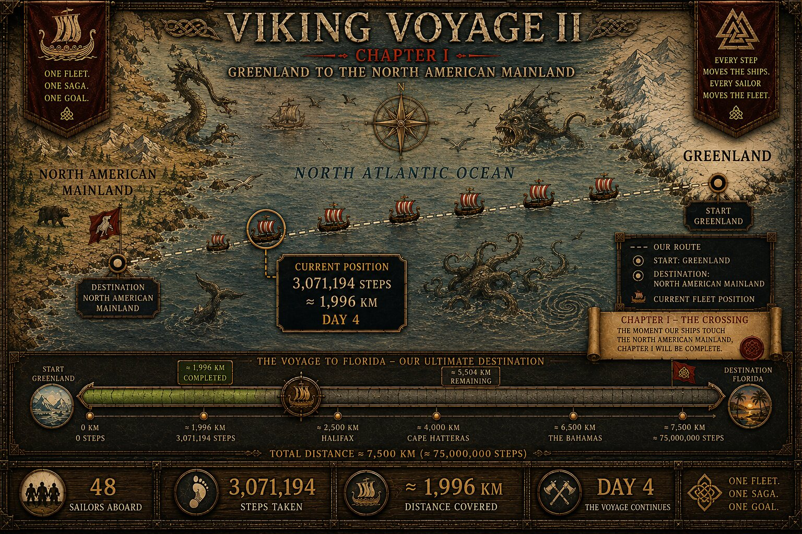

THE VOYAGE ARCHIVE · THE CAPTAIN'S LOG
DAY 4
A preserved chapter from Viking Voyage II. Only details recovered from the voyage record are carried into this log.

CAPTAIN'S LOG · DAY 4
THE CROSSING.
The voyage was no longer a departure. It had become a crossing.
By Day 4, the fleet had recorded 3,071,194 steps — approximately 1,996 kilometres. Greenland lay behind us while the North American mainland remained beyond the western horizon.
THE SEA BETWEEN TWO WORLDS.
AND OUR FLEET IN THE MIDDLE.
— Captain Hákon
PRESERVED VOYAGE MATERIAL
THE ORIGINAL DAY 4 MAP
The original Day 4 map has been recovered from the voyage material. It records the fleet at 3,071,194 steps and approximately 1,996 km during Chapter I.
RECOVEREDOriginal Day 4 voyage map · Chapter I — The Crossing3,071,194 steps · ≈ 1,996 km